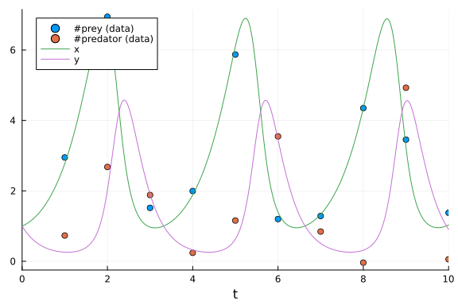

Lotka-Volterra Bayesian Parameter Estimation Benchmarks
Parameter Estimation of Lotka-Volterra Equation using DiffEqBayes.jl
using DiffEqBayes, StanSample, DynamicHMC, Turingusing Distributions, BenchmarkTools, StaticArrays
using OrdinaryDiffEq, RecursiveArrayTools, ParameterizedFunctions
using Plots, LinearAlgebra"""Print elapsed sampling time and the Turing chain."""
function display_ess_per_sec(chain, elapsed)
println("Elapsed time: $(round(elapsed; digits=2)) seconds")
display(chain)
end
# Distributions requires a vector mean; sol[:, i] can be a scalar after ODE 7.
_mvn(u, σ) = MvNormal(
let n = length(σ)
μ = u isa AbstractVector ? collect(float.(u)) : [float(u)]
length(μ) == n ? μ : fill(μ[1], n)
end,
Diagonal(σ .^ 2),
)
"""Extract and display Stan's internal timing from its CSV output files."""
function display_stan_timing(stan_result)
sample_files = stan_result.model.sample_file
for (chain_idx, f) in enumerate(sample_files)
isfile(f) || continue
lines = readlines(f)
println("Chain $chain_idx timing (from Stan CSV):")
for line in lines
if startswith(line, "#") && occursin("Elapsed Time", line)
println(" ", strip(line[2:end]))
elseif startswith(line, "#") && occursin("seconds", line)
println(" ", strip(line[2:end]))
end
end
end
endMain.var"##WeaveSandBox#277".display_stan_timinggr(fmt = :png)Plots.GRBackend()Initializing the problem
f = @ode_def LotkaVolterraTest begin
dx = a*x - b*x*y
dy = -c*y + d*x*y
end a b c dMain.var"##WeaveSandBox#277".LotkaVolterraTest{Main.var"##WeaveSandBox#277"
.var"###ParameterizedDiffEqFunction#279", Main.var"##WeaveSandBox#277".var"
###ParameterizedTGradFunction#280", Main.var"##WeaveSandBox#277".var"###Par
ameterizedJacobianFunction#281", Nothing, Nothing, ModelingToolkitBase.Syst
em}(Main.var"##WeaveSandBox#277".var"##ParameterizedDiffEqFunction#279", Li
nearAlgebra.UniformScaling{Bool}(true), nothing, Main.var"##WeaveSandBox#27
7".var"##ParameterizedTGradFunction#280", Main.var"##WeaveSandBox#277".var"
##ParameterizedJacobianFunction#281", nothing, nothing, nothing, nothing, n
othing, nothing, nothing, [:x, :y], :t, nothing, Model ##Parameterized#278:
Equations (2):
2 standard: see equations(##Parameterized#278)
Unknowns (2): see unknowns(##Parameterized#278)
x(t)
y(t)
Parameters (4): see parameters(##Parameterized#278)
a
b
c
d, nothing, nothing)u0 = [1.0, 1.0]
tspan = (0.0, 10.0)
p = [1.5, 1.0, 3.0, 1.0]4-element Vector{Float64}:
1.5
1.0
3.0
1.0prob = ODEProblem(f, u0, tspan, p)
sol = solve(prob, Tsit5())retcode: Success
Interpolation: specialized 4th order "free" interpolation
t: 34-element Vector{Float64}:
0.0
0.0776084743154256
0.2326451370670694
0.42911851563726466
0.679082199936808
0.9444046279774128
1.2674601918628516
1.61929140093895
1.9869755481702074
2.2640903679981617
⋮
7.5848624442719235
7.978067891667038
8.483164641366145
8.719247691882519
8.949206449510513
9.200184762926114
9.438028551201125
9.711807820573478
10.0
u: 34-element Vector{Vector{Float64}}:
[1.0, 1.0]
[1.0454942346944578, 0.8576684823217127]
[1.1758715885890039, 0.6394595702308833]
[1.4196809580265157, 0.456996261440507]
[1.876719397626222, 0.32473342884607376]
[2.5882501035146124, 0.26336255403957287]
[3.86070908479701, 0.27944581878759067]
[5.750813064347344, 0.5220073551361064]
[6.814978696356639, 1.9177834056716259]
[4.392997771045281, 4.194671543390715]
⋮
[2.614251082502646, 0.26416954350041094]
[4.241070648057705, 0.3051232653305123]
[6.791121825691655, 1.1345253835487776]
[6.2653749402951835, 2.741688595595249]
[3.7807688120522114, 4.431164521488329]
[1.8164214705303103, 4.064057991958692]
[1.1465028256357626, 2.7911730348239576]
[0.9557986528530791, 1.6235633163407794]
[1.0337581330572256, 0.9063703732076024]su0 = SA[1.0, 1.0]
sp = SA[1.5, 1.0, 3.0, 1.0]
sprob = ODEProblem{false, SciMLBase.FullSpecialize}(f, su0, tspan, sp)
sol = solve(sprob, Tsit5())retcode: Success
Interpolation: specialized 4th order "free" interpolation
t: 34-element Vector{Float64}:
0.0
0.0776084743154256
0.2326451370670694
0.42911851563726466
0.679082199936808
0.9444046279774128
1.2674601918628516
1.61929140093895
1.9869755481702074
2.2640903679981617
⋮
7.5848624442719235
7.978067891667038
8.483164641366145
8.719247691882519
8.949206449510513
9.200184762926114
9.438028551201125
9.711807820573478
10.0
u: 34-element Vector{StaticArraysCore.SVector{2, Float64}}:
[1.0, 1.0]
[1.0454942346944578, 0.8576684823217127]
[1.1758715885890039, 0.6394595702308833]
[1.4196809580265157, 0.456996261440507]
[1.876719397626222, 0.32473342884607376]
[2.5882501035146124, 0.26336255403957287]
[3.86070908479701, 0.27944581878759067]
[5.750813064347344, 0.5220073551361064]
[6.814978696356639, 1.9177834056716259]
[4.392997771045281, 4.194671543390715]
⋮
[2.614251082502646, 0.26416954350041094]
[4.241070648057705, 0.3051232653305123]
[6.791121825691655, 1.1345253835487776]
[6.2653749402951835, 2.741688595595249]
[3.7807688120522114, 4.431164521488329]
[1.8164214705303103, 4.064057991958692]
[1.1465028256357626, 2.7911730348239576]
[0.9557986528530791, 1.6235633163407794]
[1.0337581330572256, 0.9063703732076024]We take the solution data obtained and add noise to it to obtain data for using in the Bayesian Inference of the parameters
t = collect(range(1, stop = 10, length = 10))
sig = 0.49
data = convert(Array, VectorOfArray([(sol(t[i]) + sig*randn(2)) for i in 1:length(t)]))2×10 Matrix{Float64}:
2.52709 6.87513 1.21946 2.52779 … 3.96425 3.6102 1.55461
-0.197236 3.18618 1.53794 -0.0843126 0.271838 5.11646 0.651598Plots of the actual data and generated data
scatter(t, data[1, :], lab = "#prey (data)")
scatter!(t, data[2, :], lab = "#predator (data)")
plot!(sol)
priors = [truncated(Normal(1.5, 0.5), 0.5, 2.5), truncated(Normal(1.2, 0.5), 0, 2),
truncated(Normal(3.0, 0.5), 1, 4), truncated(Normal(1.0, 0.5), 0, 2)]4-element Vector{Distributions.Truncated{Distributions.Normal{Float64}, Dis
tributions.Continuous, Float64, Float64, Float64}}:
Truncated(Distributions.Normal{Float64}(μ=1.5, σ=0.5); lower=0.5, upper=2.
5)
Truncated(Distributions.Normal{Float64}(μ=1.2, σ=0.5); lower=0.0, upper=2.
0)
Truncated(Distributions.Normal{Float64}(μ=3.0, σ=0.5); lower=1.0, upper=4.
0)
Truncated(Distributions.Normal{Float64}(μ=1.0, σ=0.5); lower=0.0, upper=2.
0)Stan.jl backend
Truncated normal priors are used to prevent Stan from stepping into negative values.
We use adapt_delta = 0.85 (slightly above Stan's default of 0.8) consistently across the Stan and Turing backends for a fair comparison. Stan infers a separate noise parameter (sigma) per data dimension via the vars specification.
bayesian_result_stan = @time stan_inference(
prob, :rk45, t, data, priors; print_summary = false,
sample_kwargs = Dict(:delta => 0.85, :num_samples => 10_000),
vars = (DiffEqBayes.StanODEData(), InverseGamma(2, 3)))73.207017 seconds (4.89 M allocations: 239.366 MiB, 0.05% gc time, 4.87% c
ompilation time)
108.849019 seconds (34.44 M allocations: 1.700 GiB, 0.27% gc time, 14.85% c
ompilation time: 2% of which was recompilation)
10000×6 DataFrame
Row │ sigma1.1 sigma1.2 theta_1 theta_2 theta_3 theta_4
│ Float64 Float64 Float64 Float64 Float64 Float64
───────┼──────────────────────────────────────────────────────────
1 │ 0.617167 0.419661 1.49087 0.858174 3.14983 0.994666
2 │ 0.80826 0.470242 1.48046 0.847884 2.87751 1.07767
3 │ 0.619952 0.551316 1.49387 0.818614 2.91728 1.03369
4 │ 0.43553 0.450968 1.51067 0.87034 3.03051 0.972755
5 │ 0.5046 0.624565 1.53053 0.910454 2.88627 0.981822
6 │ 0.451101 0.636735 1.53673 0.889494 2.90643 0.935123
7 │ 0.507483 0.770303 1.48067 0.814267 3.02648 1.00119
8 │ 0.363054 0.664224 1.47708 0.895267 3.06338 1.00459
⋮ │ ⋮ ⋮ ⋮ ⋮ ⋮ ⋮
9994 │ 0.55499 0.360586 1.49714 0.868756 3.04229 1.007
9995 │ 0.778506 0.545378 1.47982 0.807272 3.0583 1.02886
9996 │ 0.752129 0.521911 1.48701 0.806011 3.05323 0.994323
9997 │ 0.979764 0.629234 1.68043 1.00323 2.61308 0.878632
9998 │ 0.89589 0.509082 1.69472 0.933742 2.55584 0.895639
9999 │ 0.564077 0.591288 1.60822 0.996099 2.81094 0.917016
10000 │ 0.536335 0.567878 1.6089 0.972531 2.80288 0.890477
9985 rows omittedStan's internal timing (excluding data serialization and CSV parsing):
display_stan_timing(bayesian_result_stan)Chain 1 timing (from Stan CSV):
Elapsed Time: 5.815 seconds (Warm-up)
63.816 seconds (Sampling)
69.631 seconds (Total)Direct Turing.jl
We use a per-dimension noise model (matching Stan) with InverseGamma(2, 3) priors on each σ.
@model function fitlv(data, prob)
# Prior distributions.
σ ~ filldist(InverseGamma(2, 3), 2)
α ~ truncated(Normal(1.5, 0.5), 0.5, 2.5)
β ~ truncated(Normal(1.2, 0.5), 0, 2)
γ ~ truncated(Normal(3.0, 0.5), 1, 4)
δ ~ truncated(Normal(1.0, 0.5), 0, 2)
# Simulate Lotka-Volterra model.
p = SA[α, β, γ, δ]
_prob = remake(prob, p = p)
predicted = solve(_prob, Tsit5(); saveat = t)
# Observations.
for i in axes(data, 2)
data[:, i] ~ _mvn(predicted(t[i]), σ)
end
return nothing
end
model = fitlv(data, sprob)
# Warmup run to compile all code paths before timing
sample(model, Turing.NUTS(0.85), 10; progress = false)
elapsed_turing_direct = @elapsed chain = sample(model, Turing.NUTS(0.85), 10_000; progress = false)
chain╭─FlexiChain (10000 iterations, 1 chain) ──────────────────────────────────
────╮
│ ↓ iter = 1001:11000
│
│ → chain = 1:1
│
│
│
│ Parameters (5) ── AbstractPPL.VarName
│
│ Vector{Float64} σ (2,)
│
│ Float64 α, β, γ, δ
│
│
│
│ Extras (14)
│
│ Int64 n_steps, tree_depth
│
│ Bool is_accept, numerical_error
│
│ Float64 acceptance_rate, log_density, hamiltonian_energy,
│
│ hamiltonian_energy_error, max_hamiltonian_energy_error, step_si
ze, │
│ nom_step_size, logprior, loglikelihood, logjoint
│
╰──────────────────────────────────────────────────────────────────────────
────╯display_ess_per_sec(chain, elapsed_turing_direct)Elapsed time: 77.95 seconds
╭─FlexiChain (10000 iterations, 1 chain) ──────────────────────────────────
────╮
│ ↓ iter = 1001:11000
│
│ → chain = 1:1
│
│
│
│ Parameters (5) ── AbstractPPL.VarName
│
│ Vector{Float64} σ (2,)
│
│ Float64 α, β, γ, δ
│
│
│
│ Extras (14)
│
│ Int64 n_steps, tree_depth
│
│ Bool is_accept, numerical_error
│
│ Float64 acceptance_rate, log_density, hamiltonian_energy,
│
│ hamiltonian_energy_error, max_hamiltonian_energy_error, step_si
ze, │
│ nom_step_size, logprior, loglikelihood, logjoint
│
╰──────────────────────────────────────────────────────────────────────────
────╯Turing.jl backend
@btime bayesian_result_turing = turing_inference(
prob, Tsit5(), t, data, priors;
sample_args = (sampler = Turing.NUTS(0.85), num_samples = 10_000),
likelihood = (u, p, t, σ) -> _mvn(u, σ),
likelihood_dist_priors = [InverseGamma(2, 3), InverseGamma(2, 3)])77.971 s (375186186 allocations: 21.92 GiB)
╭─FlexiChain (10000 iterations, 1 chain) ──────────────────────────────────
────╮
│ ↓ iter = 1001:11000
│
│ → chain = 1:1
│
│
│
│ Parameters (5) ── AbstractPPL.VarName
│
│ Float64 theta[1], theta[2], theta[3], theta[4]
│
│ Vector{Float64} σ (2,)
│
│
│
│ Extras (14)
│
│ Int64 n_steps, tree_depth
│
│ Bool is_accept, numerical_error
│
│ Float64 acceptance_rate, log_density, hamiltonian_energy,
│
│ hamiltonian_energy_error, max_hamiltonian_energy_error, step_si
ze, │
│ nom_step_size, logprior, loglikelihood, logjoint
│
╰──────────────────────────────────────────────────────────────────────────
────╯DynamicHMC.jl backend
@btime bayesian_result_dynamichmc = dynamichmc_inference(
prob, Tsit5(), t, data, priors; num_samples = 10_000)25.221 s (89457194 allocations: 7.56 GiB)
(posterior = [(parameters = [1.4476685178849027, 0.8792982668823641, 3.1162
794317706517, 1.1034065500991816], σ = [0.49033477062861824, 0.460795070633
26086]), (parameters = [1.451856060474085, 0.8758832936246487, 3.1167366325
886956, 1.1103860191663237], σ = [0.4918700018868662, 0.4725372916523627]),
(parameters = [1.4840730655808463, 0.8927999846188753, 3.0403488626735604,
0.991119545286339], σ = [0.4207690040815519, 0.49821681352439734]), (param
eters = [1.6039641569556364, 0.9398518550607804, 2.7111741795988786, 0.8905
299810958612], σ = [0.42899698755179005, 0.25920002052495067]), (parameters
= [1.5747571201637145, 0.9192489314631764, 2.7632771853301206, 0.916288210
5000995], σ = [0.3632975842345243, 0.39109888622079886]), (parameters = [1.
5395145707923743, 0.8905562831181824, 2.8631488169274517, 0.989535728931311
4], σ = [0.5646195120964767, 0.2655960593022276]), (parameters = [1.5576888
746819317, 0.9003297159961149, 2.819395124985265, 0.9622054730932554], σ =
[0.35434760057705295, 0.3379438146519868]), (parameters = [1.47759477804904
42, 0.8546759068408251, 3.160401560631989, 1.0284929985953877], σ = [0.4870
6738468603233, 0.40517319103178195]), (parameters = [1.4436244903460647, 0.
834001320539935, 3.071597785659058, 1.1072322529578023], σ = [0.62638357293
3718, 0.41897951916793486]), (parameters = [1.4402715394868428, 0.845520822
3883052, 3.2664955438347314, 1.044118969788581], σ = [0.4815175012230368, 0
.5302142579348906]) … (parameters = [1.5460951604885118, 0.92827653788400
85, 2.8214247309032117, 0.9608324617614382], σ = [0.45671633903357095, 0.44
826294889182267]), (parameters = [1.5242101662123861, 0.9587942708393042, 2
.8885880673714572, 0.9785657582814417], σ = [0.5345138475968254, 0.45041123
813041145]), (parameters = [1.5514969674193846, 0.9263790045875465, 2.84206
7037088315, 0.9380280073768954], σ = [0.3477587142769449, 0.550283875899224
6]), (parameters = [1.5247276117153612, 0.9797821066432957, 2.9302599930637
16, 0.968128630890477], σ = [0.33006591491037696, 0.6623429060553955]), (pa
rameters = [1.5194942898779513, 0.9788037642009224, 2.9143959847095875, 0.9
552146906591953], σ = [0.331481114767876, 0.6673074986893519]), (parameters
= [1.5113863722180383, 0.9649599281006653, 2.9603161688476014, 0.975574010
449598], σ = [0.3412477390863709, 0.4495285485569228]), (parameters = [1.56
50437055968633, 0.9535452753611688, 2.8500648467958434, 0.9314404155170826]
, σ = [0.3447578631603385, 0.3647962599594296]), (parameters = [1.582507894
1592043, 0.9086762384372914, 2.803963290607017, 0.9357464286247262], σ = [0
.5417908689849672, 0.3053350675328467]), (parameters = [1.4965176045938897,
0.916633356603956, 3.0457621200746763, 0.9668982954156402], σ = [0.3905332
79768808, 0.46382032132226514]), (parameters = [1.4881346423396538, 0.87634
58670085983, 3.095001611395606, 0.9998113952017841], σ = [0.592953889310063
2, 0.30049516009589117])], posterior_matrix = [0.36995434364376406 0.372842
7795838123 … 0.40314081208632097 0.397523417760655; -0.12863111361883858 -0
.13252242337705866 … -0.08704771590010983 -0.1319944406164839; … ; -0.71266
69157914775 -0.7095408212102717 … -0.9402420898540489 -0.5226386413381634;
-0.7748018670681315 -0.7496386110307005 … -0.7682580402816838 -1.2023236313
066599], tree_statistics = DynamicHMC.TreeStatisticsNUTS[DynamicHMC.TreeSta
tisticsNUTS(-19.73263124898585, 5, turning at positions 20:51, 0.9458414307
342099, 63, DynamicHMC.Directions(0xc5d16833)), DynamicHMC.TreeStatisticsNU
TS(-20.000207988320724, 2, turning at positions -1:2, 0.9517922502573214, 3
, DynamicHMC.Directions(0x24719f3e)), DynamicHMC.TreeStatisticsNUTS(-20.179
741850522475, 4, turning at positions -14:-21, 0.9585131768580837, 31, Dyna
micHMC.Directions(0x93b0000a)), DynamicHMC.TreeStatisticsNUTS(-17.586016277
82383, 5, turning at positions -25:-32, 0.9918303911809301, 39, DynamicHMC.
Directions(0x760ecbc7)), DynamicHMC.TreeStatisticsNUTS(-17.2778139024511, 5
, turning at positions -17:14, 0.9862925717545266, 31, DynamicHMC.Direction
s(0x6651ba4e)), DynamicHMC.TreeStatisticsNUTS(-17.78007569903434, 5, turnin
g at positions -7:24, 0.7582515442734812, 31, DynamicHMC.Directions(0x374fa
df8)), DynamicHMC.TreeStatisticsNUTS(-18.552635448897014, 5, turning at pos
itions -10:21, 0.9012610475326215, 31, DynamicHMC.Directions(0x525193f5)),
DynamicHMC.TreeStatisticsNUTS(-19.052743213946787, 5, turning at positions
-15:-18, 0.8207107923369191, 39, DynamicHMC.Directions(0x5781c955)), Dynami
cHMC.TreeStatisticsNUTS(-19.15951569684452, 4, turning at positions -9:-24,
0.9616764533271717, 31, DynamicHMC.Directions(0x1f311567)), DynamicHMC.Tre
eStatisticsNUTS(-21.234595065689913, 4, turning at positions 12:19, 0.96571
43076680554, 23, DynamicHMC.Directions(0x452a075b)) … DynamicHMC.TreeStat
isticsNUTS(-17.5325628911112, 5, turning at positions -30:1, 0.865636528113
5845, 31, DynamicHMC.Directions(0x8fb84f01)), DynamicHMC.TreeStatisticsNUTS
(-18.85341410771649, 4, turning at positions 7:22, 0.9080675519037684, 31,
DynamicHMC.Directions(0xfd8eca76)), DynamicHMC.TreeStatisticsNUTS(-18.32587
5477108966, 5, turning at positions -9:22, 0.9937174741623888, 31, DynamicH
MC.Directions(0x0ef76196)), DynamicHMC.TreeStatisticsNUTS(-18.3834085555629
2, 4, turning at positions 6:21, 0.9473017510997487, 31, DynamicHMC.Directi
ons(0x5ee10a15)), DynamicHMC.TreeStatisticsNUTS(-19.25268569383515, 4, turn
ing at positions 16:23, 0.7384911086290119, 31, DynamicHMC.Directions(0x84c
37597)), DynamicHMC.TreeStatisticsNUTS(-19.551664294280123, 4, turning at p
ositions 13:28, 0.8799347414570727, 31, DynamicHMC.Directions(0x7ae9025c)),
DynamicHMC.TreeStatisticsNUTS(-19.0108892386747, 4, turning at positions 0
:15, 0.9424887395842007, 15, DynamicHMC.Directions(0xcea652ef)), DynamicHMC
.TreeStatisticsNUTS(-17.999513410564884, 4, turning at positions -7:8, 0.71
61463412351406, 15, DynamicHMC.Directions(0x406031f8)), DynamicHMC.TreeStat
isticsNUTS(-18.2342240812839, 5, turning at positions -31:0, 0.981183017234
2828, 31, DynamicHMC.Directions(0x0bd16660)), DynamicHMC.TreeStatisticsNUTS
(-18.638544434693138, 5, turning at positions -26:5, 0.9572591635995672, 31
, DynamicHMC.Directions(0x8657b225))], logdensities = [-18.29631390767163,
-19.627948686288104, -15.9073625332707, -16.41386726514752, -15.23062824833
935, -16.151688213415017, -15.93078206034526, -17.301563038246105, -17.4190
16544520968, -17.974287778619747 … -15.536874732623394, -16.7943818052703
76, -15.690857447251748, -17.167520484506365, -18.79667441427467, -16.10042
878676396, -15.478975004489026, -15.733417149914978, -17.121967286334822, -
17.015232533445566], κ = Gaussian kinetic energy (Diagonal), √diag(M⁻¹): [0
.04335825968656034, 0.061563082086944956, 0.060820972358074966, 0.077329634
63850066, 0.28818527850176007, 0.300431029107059], ϵ = 0.12228102613608945)Conclusion
The Lotka-Volterra equation is a "predator-prey" model: it models the populations of two species, one of which is the predator (wolf) and the other the prey (rabbit). Its solutions are periodic. This page runs each backend at a single ODE solver tolerance, so it does not measure how the estimate depends on the tolerance.
Appendix
These benchmarks are a part of the SciMLBenchmarks.jl repository, found at: https://github.com/SciML/SciMLBenchmarks.jl. For more information on high-performance scientific machine learning, check out the SciML Open Source Software Organization https://sciml.ai.
To locally run this benchmark, do the following commands:
using SciMLBenchmarks
SciMLBenchmarks.weave_file("benchmarks/BayesianInference","DiffEqBayesLotkaVolterra.jmd")Computer Information:
Julia Version 1.12.7
Commit 6d172b025e4 (2026-08-15 08:05 UTC)
Build Info:
Official https://julialang.org release
Platform Info:
OS: Linux (x86_64-linux-gnu)
CPU: 128 × AMD EPYC 7502 32-Core Processor
WORD_SIZE: 64
LLVM: libLLVM-18.1.7 (ORCJIT, znver2)
GC: Built with stock GC
Threads: 128 default, 1 interactive, 128 GC (on 128 virtual cores)
Environment:
JULIA_NUM_THREADS = auto
Package Information:
Status `/julia/github-runners/amdci1-1/_work/SciMLBenchmarks.jl/SciMLBenchmarks.jl/benchmarks/BayesianInference/Project.toml`
[6e4b80f9] BenchmarkTools v1.8.0
[ebbdde9d] DiffEqBayes v3.16.2
⌃ [459566f4] DiffEqCallbacks v4.19.4
⌃ [31c24e10] Distributions v0.25.131
⌃ [bbc10e6e] DynamicHMC v3.6.1
[1dea7af3] OrdinaryDiffEq v7.8.1
⌃ [65888b18] ParameterizedFunctions v5.27.0
[91a5bcdd] Plots v1.41.7
⌃ [731186ca] RecursiveArrayTools v4.5.1
[31c91b34] SciMLBenchmarks v0.2.1 [loaded: `/julia/github-runners/amdci1-1/_work/SciMLBenchmarks.jl/SciMLBenchmarks.jl/src/SciMLBenchmarks.jl` (v0.2.1) expected `/home/crackauc/.julia/packages/SciMLBenchmarks/ceJyd/src/SciMLBenchmarks.jl` (v0.2.1)]
[c1514b29] StanSample v7.10.3
⌃ [90137ffa] StaticArrays v1.9.20
⌃ [fce5fe82] Turing v0.46.1
[37e2e46d] LinearAlgebra v1.12.0
Info Packages marked with ⌃ have new versions available and may be upgradable.And the full manifest:
Status `/julia/github-runners/amdci1-1/_work/SciMLBenchmarks.jl/SciMLBenchmarks.jl/benchmarks/BayesianInference/Manifest.toml`
[47edcb42] ADTypes v1.24.0
[14f7f29c] AMD v0.5.4
[621f4979] AbstractFFTs v1.5.0
⌃ [80f14c24] AbstractMCMC v5.16.0
⌃ [7a57a42e] AbstractPPL v0.15.5
[6e696c72] AbstractPlutoDingetjes v1.4.1
[1520ce14] AbstractTrees v0.4.5
[7d9f7c33] Accessors v0.1.45
⌃ [79e6a3ab] Adapt v4.7.0
⌃ [0bf59076] AdvancedHMC v0.8.7
[5b7e9947] AdvancedMH v0.8.10
⌅ [576499cb] AdvancedPS v0.7.2
[b5ca4192] AdvancedVI v0.7.0
[66dad0bd] AliasTables v1.1.3
[dce04be8] ArgCheck v2.5.0
[ec485272] ArnoldiMethod v0.4.0
[4fba245c] ArrayInterface v7.30.2
⌃ [4c555306] ArrayLayouts v1.12.2
⌃ [aae01518] BandedMatrices v1.12.0
[198e06fe] BangBang v0.4.9
[6e4b80f9] BenchmarkTools v1.8.0
[e2ed5e7c] Bijections v0.2.2
[76274a88] Bijectors v0.16.3
[b2a6c25c] BinaryHeaps v1.1.0
[caf10ac8] BipartiteGraphs v0.1.14
⌃ [8e7c35d0] BlockArrays v1.10.0
⌃ [70df07ce] BracketingNonlinearSolve v1.12.7
⌅ [336ed68f] CSV v0.10.17
⌃ [d360d2e6] ChainRulesCore v1.26.1
[0ca39b1e] Chairmarks v1.3.1
[9e997f8a] ChangesOfVariables v0.1.11
[944b1d66] CodecZlib v0.7.9
[35d6a980] ColorSchemes v3.31.0
⌃ [3da002f7] ColorTypes v0.12.1
[c3611d14] ColorVectorSpace v0.11.0
⌃ [5ae59095] Colors v0.13.1
⌅ [861a8166] Combinatorics v1.0.2
[38540f10] CommonSolve v0.2.14
[bbf7d656] CommonSubexpressions v0.3.1
[f70d9fcc] CommonWorldInvalidations v1.2.2
[34da2185] Compat v4.18.1
[5224ae11] CompatHelperLocal v0.1.29
[b152e2b5] CompositeTypes v0.1.4
[a33af91c] CompositionsBase v0.1.2
[2569d6c7] ConcreteStructs v0.2.8
[88cd18e8] ConsoleProgressMonitor v0.1.2
[187b0558] ConstructionBase v1.6.0
[d38c429a] Contour v0.6.3
[a8cc5b0e] Crayons v4.2.0
[9a962f9c] DataAPI v1.16.0
[a93c6f00] DataFrames v1.8.2
[864edb3b] DataStructures v0.19.6
[e2d170a0] DataValueInterfaces v1.0.0
[8bb1440f] DelimitedFiles v1.9.1
⌅ [b429d917] DensityInterface v0.4.0
⌃ [2b5f629d] DiffEqBase v7.21.1
[ebbdde9d] DiffEqBayes v3.16.2
⌃ [459566f4] DiffEqCallbacks v4.19.4
[163ba53b] DiffResults v1.1.0
[b552c78f] DiffRules v1.16.0
[a0c0ee7d] DifferentiationInterface v0.7.21
[0703355e] DimensionalData v0.30.2
[b4f34e82] Distances v0.10.12
⌃ [31c24e10] Distributions v0.25.131
⌅ [ffbed154] DocStringExtensions v0.9.5
⌃ [5b8099bc] DomainSets v0.8.1
⌃ [bbc10e6e] DynamicHMC v3.6.1
⌃ [366bfd00] DynamicPPL v0.42.13
[7c1d4256] DynamicPolynomials v0.6.8
[cad2338a] EllipticalSliceSampling v2.0.0
[4e289a0a] EnumX v1.0.7
⌃ [f151be2c] EnzymeCore v0.8.21
[e2ba6199] ExprTools v0.1.11
[55351af7] ExproniconLite v0.10.14
[411431e0] Extents v0.1.6
⌃ [c87230d0] FFMPEG v0.4.5
⌃ [7034ab61] FastBroadcast v1.4.0
[9aa1b823] FastClosures v0.3.2
⌃ [a4df4552] FastPower v1.5.0
[48062228] FilePathsBase v0.9.24
⌃ [1a297f60] FillArrays v1.17.0
⌃ [64ca27bc] FindFirstFunctions v3.2.1
[6a86dc24] FiniteDiff v2.33.0
⌅ [53c48c17] FixedPointNumbers v0.8.6
⌅ [4a37a8b9] FlexiChains v0.6.39
[1fa38f19] Format v1.3.7
[f6369f11] ForwardDiff v1.4.6
[a85aefff] FunctionMaps v0.1.2
[069b7b12] FunctionWrappers v1.1.3
[77dc65aa] FunctionWrappersWrappers v1.13.0
⌃ [d9f16b24] Functors v0.5.3
⌃ [46192b85] GPUArraysCore v0.2.0
[28b8d3ca] GR v0.73.27
⌃ [a0844989] Gamma v1.1.0
[86223c79] Graphs v1.15.0
⌅ [eafb193a] Highlights v0.5.3
[34004b35] HypergeometricFunctions v0.3.30
[3263718b] ImplicitDiscreteSolve v2.3.0
[d25df0c9] Inflate v0.1.5
[22cec73e] InitialValues v0.3.1
⌅ [842dd82b] InlineStrings v1.4.6
[18e54dd8] IntegerMathUtils v0.1.4
[85a1e053] Interfaces v0.3.2
⌃ [8197267c] IntervalSets v0.7.14
⌃ [3587e190] InverseFunctions v0.1.17
[41ab1584] InvertedIndices v1.3.1
[92d709cd] IrrationalConstants v0.2.6
[82899510] IteratorInterfaceExtensions v1.0.0
[1019f520] JLFzf v0.1.11
[692b3bcd] JLLWrappers v1.8.0
⌅ [682c06a0] JSON v0.21.4
[ae98c720] Jieko v0.2.1
⌅ [ccbc3e58] JumpProcesses v9.32.3
⌃ [ba0b0d4f] Krylov v0.10.10
[2faa5264] LHLFactorization v2.2.2
[b964fa9f] LaTeXStrings v1.4.1
[23fbe1c1] Latexify v0.16.12
[1fad7336] LazyStack v0.1.3
[1d6d02ad] LeftChildRightSiblingTrees v0.3.0
[6f1fad26] Libtask v0.9.19
⌃ [87fe0de2] LineSearch v0.1.18
⌃ [d3d80556] LineSearches v7.8.1
⌃ [7ed4a6bd] LinearSolve v5.17.3
⌃ [6fdf6af0] LogDensityProblems v2.2.0
[996a588d] LogDensityProblemsAD v1.13.1
⌅ [2ab3a3ac] LogExpFunctions v0.3.29
[e6f89c97] LoggingExtras v1.2.0
[be115224] MCMCDiagnosticTools v0.3.19
[e80e1ace] MLJModelInterface v1.12.1
[1914dd2f] MacroTools v0.5.16
[dbb5928d] MappedArrays v0.4.3
[bb5d69b7] MaybeInplace v0.1.8
[442fdcdd] Measures v0.3.3
[e1d29d7a] Missings v1.2.0
[dbe65cb8] MistyClosures v2.1.0
⌃ [961ee093] ModelingToolkit v11.43.1
⌃ [7771a370] ModelingToolkitBase v1.71.2
⌃ [6bb917b9] ModelingToolkitTearing v1.20.6
⌅ [2e0e35c7] Moshi v0.3.9
[46d2c3a1] MuladdMacro v0.2.7
⌃ [102ac46a] MultivariatePolynomials v0.5.19
⌃ [ffc61752] Mustache v1.0.21 [loaded: v1.1.0]
⌃ [d8a4904e] MutableArithmetics v1.8.0
[d41bc354] NLSolversBase v8.0.1
[77ba4419] NaNMath v1.1.4
[d9ec5142] NamedTupleTools v0.14.3
⌃ [8913a72c] NonlinearSolve v4.30.0
⌃ [be0214bd] NonlinearSolveBase v2.49.5
⌃ [5959db7a] NonlinearSolveFirstOrder v2.6.1
[9a2c21bd] NonlinearSolveQuasiNewton v1.15.3
[26075421] NonlinearSolveSpectralMethods v1.8.3
[6fe1bfb0] OffsetArrays v1.17.0
⌃ [429524aa] Optim v2.3.1
⌃ [3bd65402] Optimisers v0.4.9
[7f7a1694] Optimization v5.9.1
⌃ [bca83a33] OptimizationBase v5.6.1
⌃ [36348300] OptimizationOptimJL v0.4.21
⌅ [bac558e1] OrderedCollections v1.8.2 [loaded: v2.0.3]
[1dea7af3] OrdinaryDiffEq v7.8.1
⌃ [6ad6398a] OrdinaryDiffEqBDF v2.4.9
⌃ [bbf590c4] OrdinaryDiffEqCore v4.17.2
[50262376] OrdinaryDiffEqDefault v2.6.2
⌃ [4302a76b] OrdinaryDiffEqDifferentiation v3.12.0
⌃ [127b3ac7] OrdinaryDiffEqNonlinearSolve v2.9.8
⌃ [43230ef6] OrdinaryDiffEqRosenbrock v2.7.3
[b4bd8bb3] OrdinaryDiffEqRosenbrockTableaus v2.4.2
⌃ [2d112036] OrdinaryDiffEqSDIRK v2.9.4
⌃ [b1df2697] OrdinaryDiffEqTsit5 v2.1.4
⌃ [79d7bb75] OrdinaryDiffEqVerner v2.4.1
[90014a1f] PDMats v0.11.41
⌃ [65888b18] ParameterizedFunctions v5.27.0
⌅ [d96e819e] Parameters v0.12.3
⌅ [69de0a69] Parsers v2.8.8
⌃ [569bd051] PartitionedDistributions v0.1.0
[ccf2f8ad] PlotThemes v3.3.0
⌃ [995b91a9] PlotUtils v1.4.4
[91a5bcdd] Plots v1.41.7
⌃ [e409e4f3] PoissonRandom v0.4.13
[2dfb63ee] PooledArrays v1.4.3
[85a6dd25] PositiveFactorizations v0.2.4
[d236fae5] PreallocationTools v1.7.1
[aea7be01] PrecompileTools v1.3.4
⌃ [21216c6a] Preferences v1.6.0 [loaded: v1.6.1]
⌃ [08abe8d2] PrettyTables v3.4.8
[27ebfcd6] Primes v0.5.7
[33c8b6b6] ProgressLogging v0.1.6
⌃ [92933f4c] ProgressMeter v1.11.0
[43287f4e] PtrArrays v1.4.0
⌃ [0c0d3e7f] PureKLU v1.5.0
[1fd47b50] QuadGK v2.11.3
[74087812] Random123 v1.7.1
[e6cf234a] RandomNumbers v1.6.0
[988b38a3] ReadOnlyArrays v0.2.0
[795d4caa] ReadOnlyDicts v1.0.1
⌃ [3cdcf5f2] RecipesBase v1.3.4
[01d81517] RecipesPipeline v0.6.12
⌃ [731186ca] RecursiveArrayTools v4.5.1
[189a3867] Reexport v1.2.2
[05181044] RelocatableFolders v1.0.1
[ae029012] Requires v1.3.1
[9fe22ead] RespecializeParams v1.3.0
[79098fc4] Rmath v0.9.0
⌃ [f2b01f46] Roots v3.0.8
⌃ [7e49a35a] RuntimeGeneratedFunctions v0.5.26
⌃ [9dfe8606] SCCNonlinearSolve v1.15.3
⌅ [26aad666] SSMProblems v0.6.1
⌃ [0bca4576] SciMLBase v3.54.0
[31c91b34] SciMLBenchmarks v0.2.1 [loaded: `/julia/github-runners/amdci1-1/_work/SciMLBenchmarks.jl/SciMLBenchmarks.jl/src/SciMLBenchmarks.jl` (v0.2.1) expected `/home/crackauc/.julia/packages/SciMLBenchmarks/ceJyd/src/SciMLBenchmarks.jl` (v0.2.1)]
⌃ [19f34311] SciMLJacobianOperators v0.1.19
[a6db7da4] SciMLLogging v2.1.0
⌃ [c0aeaf25] SciMLOperators v1.30.0
[431bcebd] SciMLPublic v1.3.0
⌃ [53ae85a6] SciMLStructures v1.10.5
[30f210dd] ScientificTypesBase v3.1.0
[6c6a2e73] Scratch v1.3.0
[91c51154] SentinelArrays v1.4.10
[efcf1570] Setfield v1.1.2
[992d4aef] Showoff v1.1.1
⌃ [727e6d20] SimpleNonlinearSolve v2.14.5
[699a6c99] SimpleTraits v0.9.6
[a2af1166] SortingAlgorithms v1.2.3
[a57abbd0] SparseColumnPivotedQR v2.1.8
⌃ [9f842d2f] SparseConnectivityTracer v1.2.3
⌃ [0a514795] SparseMatrixColorings v0.4.28
[276daf66] SpecialFunctions v2.9.0
⌃ [860ef19b] StableRNGs v1.0.4
[d0ee94f6] StanBase v4.12.4
[c1514b29] StanSample v7.10.3
[0c0c59c1] StarAlgebras v0.3.0
[64909d44] StateSelection v1.11.1
⌃ [90137ffa] StaticArrays v1.9.20
[1e83bf80] StaticArraysCore v1.4.4
⌃ [64bff920] StatisticalTraits v3.5.0
[10745b16] Statistics v1.11.5
[82ae8749] StatsAPI v1.8.0
[2913bbd2] StatsBase v0.34.13
⌅ [4c63d2b9] StatsFuns v1.5.3
⌃ [5e0ebb24] Strided v2.6.4
⌃ [4db3bf67] StridedViews v0.5.2
[69024149] StringEncodings v0.3.7
⌅ [892a3eda] StringManipulation v0.5.0
[2efcf032] SymbolicIndexingInterface v0.3.55
⌃ [19f23fe9] SymbolicLimits v1.2.1
⌃ [d1185830] SymbolicUtils v4.46.6
⌃ [0c5d862f] Symbolics v7.39.2
[ab02a1b2] TableOperations v1.2.0
[3783bdb8] TableTraits v1.0.1
[bd369af6] Tables v1.14.0
[ed4db957] TaskLocalValues v0.1.3
[02d47bb6] TensorCast v0.4.9
[62fd8b95] TensorCore v0.1.1
⌃ [8ea1fca8] TermInterface v2.0.0
[5d786b92] TerminalLoggers v0.1.8
⌃ [a759f4b9] TimerOutputs v1.2.1
[3bb67fe8] TranscodingStreams v0.11.3
[84d833dd] TransformVariables v0.8.26
[f9bc47f6] TransformedLogDensities v1.1.1
[24ddb15e] TransmuteDims v0.1.17
[781d530d] TruncatedStacktraces v1.4.0
⌃ [9d95972d] TupleTools v1.6.0
⌃ [fce5fe82] Turing v0.46.1
[3a884ed6] UnPack v1.0.2
[1cfade01] UnicodeFun v0.4.1
[41fe7b60] Unzip v0.2.0
[d30d5f5c] WeakCacheSets v0.1.0
⌅ [ea10d353] WeakRefStrings v1.4.3
[44d3d7a6] Weave v0.10.12
[76eceee3] WorkerUtilities v1.6.1
⌃ [ddb6d928] YAML v0.4.16 [loaded: v0.4.17]
[6e34b625] Bzip2_jll v1.0.9+0
⌃ [83423d85] Cairo_jll v1.18.7+0
[ee1fde0b] Dbus_jll v1.16.2+0
[2702e6a9] EpollShim_jll v0.0.20230411+1
[2e619515] Expat_jll v2.8.4+0
⌅ [b22a6f82] FFMPEG_jll v8.1.2+0
[a3f928ae] Fontconfig_jll v2.17.1+0
[d7e528f0] FreeType2_jll v2.14.3+1
[559328eb] FriBidi_jll v1.0.17+0
[0656b61e] GLFW_jll v3.5.1+0
[d2c73de3] GR_jll v0.73.27+0
⌅ [b0724c58] GettextRuntime_jll v0.22.4+0
[61579ee1] Ghostscript_jll v9.55.1+0
⌃ [7746bdde] Glib_jll v2.88.3+0
[3b182d85] Graphite2_jll v1.3.16+0
[2e76f6c2] HarfBuzz_jll v100.14004.0+0
[1d5cc7b8] IntelOpenMP_jll v2025.2.0+0
[aacddb02] JpegTurbo_jll v3.2.0+1
[c1c5ebd0] LAME_jll v3.100.3+0
[88015f11] LERC_jll v4.2.0+0
[1d63c593] LLVMOpenMP_jll v23.1.1+0
⌅ [e9f186c6] Libffi_jll v3.4.7+0
[7e76a0d4] Libglvnd_jll v1.7.1+1
[94ce4f54] Libiconv_jll v1.18.0+0
⌃ [4b2f31a3] Libmount_jll v2.42.0+0
[89763e89] Libtiff_jll v4.7.3+0
⌃ [38a345b3] Libuuid_jll v2.42.0+0
[856f044c] MKL_jll v2025.2.0+0
[e7412a2a] Ogg_jll v1.3.6+0
[efe28fd5] OpenSpecFun_jll v0.5.6+0
[91d4177d] Opus_jll v1.6.1+0
[36c8627f] Pango_jll v1.58.2+0
[30392449] Pixman_jll v0.46.4+0
[c0090381] Qt6Base_jll v6.10.2+2
[629bc702] Qt6Declarative_jll v6.10.2+2
[ce943373] Qt6ShaderTools_jll v6.10.2+1
[6de9746b] Qt6Svg_jll v6.10.2+0
[e99dba38] Qt6Wayland_jll v6.10.2+1
[f50d1b31] Rmath_jll v0.5.2+0
[a44049a8] Vulkan_Loader_jll v1.3.243+0
[a2964d1f] Wayland_jll v1.24.0+0
[ffd25f8a] XZ_jll v5.8.4+0
[f67eecfb] Xorg_libICE_jll v1.1.2+0
[c834827a] Xorg_libSM_jll v1.2.6+0
⌃ [4f6342f7] Xorg_libX11_jll v1.8.13+0
[0c0b7dd1] Xorg_libXau_jll v1.0.13+0
[935fb764] Xorg_libXcursor_jll v1.2.4+0
[a3789734] Xorg_libXdmcp_jll v1.1.6+0
[1082639a] Xorg_libXext_jll v1.3.8+0
[d091e8ba] Xorg_libXfixes_jll v6.0.2+0
⌃ [a51aa0fd] Xorg_libXi_jll v1.8.4+0
[d1454406] Xorg_libXinerama_jll v1.1.7+0
[ec84b674] Xorg_libXrandr_jll v1.5.6+0
⌃ [ea2f1a96] Xorg_libXrender_jll v0.9.12+0
[a65dc6b1] Xorg_libpciaccess_jll v0.19.0+0
[c7cfdc94] Xorg_libxcb_jll v1.17.1+0
[cc61e674] Xorg_libxkbfile_jll v1.2.0+0
[e920d4aa] Xorg_xcb_util_cursor_jll v0.1.6+0
[12413925] Xorg_xcb_util_image_jll v0.4.1+0
[2def613f] Xorg_xcb_util_jll v0.4.1+0
[975044d2] Xorg_xcb_util_keysyms_jll v0.4.1+0
[0d47668e] Xorg_xcb_util_renderutil_jll v0.3.10+0
[c22f9ab0] Xorg_xcb_util_wm_jll v0.4.2+0
⌃ [35661453] Xorg_xkbcomp_jll v1.4.7+0
⌃ [33bec58e] Xorg_xkeyboard_config_jll v2.47.0+2
[c5fb5394] Xorg_xtrans_jll v1.6.0+0
[3161d3a3] Zstd_jll v1.5.7+1
[35ca27e7] eudev_jll v3.2.14+0
⌅ [214eeab7] fzf_jll v0.61.1+0
⌃ [a4ae2306] libaom_jll v3.14.1+0
[0ac62f75] libass_jll v0.17.5+0
[1183f4f0] libdecor_jll v0.2.2+0
[8e53e030] libdrm_jll v2.4.134+0
[2db6ffa8] libevdev_jll v1.13.4+0
[f638f0a6] libfdk_aac_jll v2.0.4+0
[36db933b] libinput_jll v1.28.1+0
⌃ [b53b4c65] libpng_jll v1.6.58+0
[9a156e7d] libva_jll v2.23.0+0
[f27f6e37] libvorbis_jll v1.3.8+0
[009596ad] mtdev_jll v1.1.7+0
⌃ [1317d2d5] oneTBB_jll v2022.3.0+0
⌅ [1270edf5] x264_jll v10164.0.1+0
[dfaa095f] x265_jll v4.1.0+0
[d8fb68d0] xkbcommon_jll v1.13.0+0
[0dad84c5] ArgTools v1.1.2
[56f22d72] Artifacts v1.11.0
[2a0f44e3] Base64 v1.11.0
[ade2ca70] Dates v1.11.0
[8ba89e20] Distributed v1.11.0
[f43a241f] Downloads v1.7.0
[7b1f6079] FileWatching v1.11.0
[9fa8497b] Future v1.11.0
[b77e0a4c] InteractiveUtils v1.11.0
[ac6e5ff7] JuliaSyntaxHighlighting v1.12.0
[4af54fe1] LazyArtifacts v1.11.0
[b27032c2] LibCURL v0.6.4
[76f85450] LibGit2 v1.11.0
[8f399da3] Libdl v1.11.0
[37e2e46d] LinearAlgebra v1.12.0
[56ddb016] Logging v1.11.0
[d6f4376e] Markdown v1.11.0
[a63ad114] Mmap v1.11.0
[ca575930] NetworkOptions v1.3.0
[44cfe95a] Pkg v1.12.1
[de0858da] Printf v1.11.0
[9abbd945] Profile v1.11.0
[3fa0cd96] REPL v1.11.0
[9a3f8284] Random v1.11.0
[ea8e919c] SHA v0.7.0
[9e88b42a] Serialization v1.11.0
[6462fe0b] Sockets v1.11.0
[2f01184e] SparseArrays v1.12.0
[f489334b] StyledStrings v1.11.0
[4607b0f0] SuiteSparse
[fa267f1f] TOML v1.0.3
[a4e569a6] Tar v1.10.0
[8dfed614] Test v1.11.0
[cf7118a7] UUIDs v1.11.0
[4ec0a83e] Unicode v1.11.0
[e66e0078] CompilerSupportLibraries_jll v1.3.1+2
[deac9b47] LibCURL_jll v8.15.0+0
[e37daf67] LibGit2_jll v1.9.0+0
[29816b5a] LibSSH2_jll v1.11.3+1
[14a3606d] MozillaCACerts_jll v2025.11.4
[4536629a] OpenBLAS_jll v0.3.29+0
[05823500] OpenLibm_jll v0.8.7+0
[458c3c95] OpenSSL_jll v3.5.6+0
[efcefdf7] PCRE2_jll v10.44.0+1
[bea87d4a] SuiteSparse_jll v7.8.3+2
[83775a58] Zlib_jll v1.3.1+2
[8e850b90] libblastrampoline_jll v5.15.0+0
[8e850ede] nghttp2_jll v1.64.0+1
[3f19e933] p7zip_jll v17.7.0+0
Info Packages marked with ⌃ and ⌅ have new versions available. Those with ⌃ may be upgradable, but those with ⌅ are restricted by compatibility constraints from upgrading. To see why use `status --outdated -m`